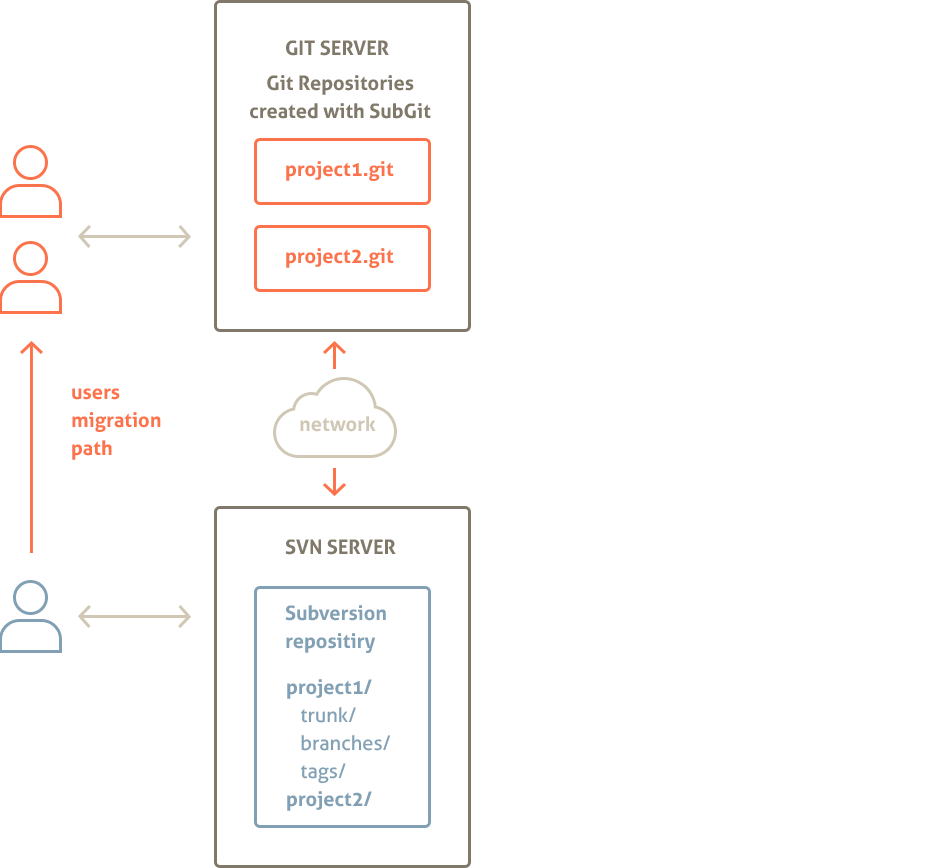
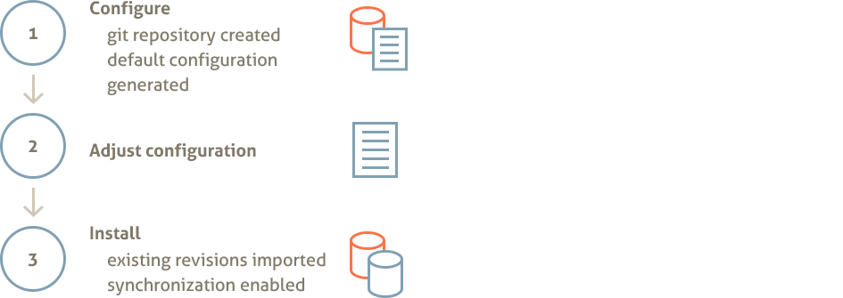

SubGit镜像远程SVN仓库到本地
Chapter 1. Overview
SubGit is a tool for bidirectional Subversion and Git repositories synchronization. SubGit is written in Java.
SubGit 是一个同步SVN和Git仓库的工具，用java编写。
For information on how to install SubGit into the local Subversion repository, refer to SubGit Local Book. This book only covers the case when SubGit is used to create Git mirror of a remote Subversion repository.
如何将SubGit安装在 SVN仓库中, 请参考 SubGit Local Book. 这个文档只是针对一种情况，在本地路径中通过SubGit创建一个远程SVN仓库的Git镜像
Most commonly, SubGit user starts with Subversion repository being configured on the server. Access to Subversion repository is available over network (with HTTP(s), plain svn or svn over SSH protocols) and over the local file system. Correspondingly, users requests are handled by Apache Web Server, svnserve daemon or sshd daemon which invokes svnserve process. Figure 1.1 shows a generic outline of the described configuration.
大部分情况，SubGit用户都是从一个配置在
Figure 1.1. Common Subversion Setup
User creates Git repositories with SubGit and configures them so, that these repositories are kept in sync with the remote Subversion repository. Each Git repository mirrors one Subverion project (there could be multiple projects within a single Subversion repository). Changes pushed to the Git repository are instantly translated into Subversion project and vice versa - commits to Subversion project are reflected in the corresponding Git repository.
Optionally, user may enable revision properties on Subversion side by enabling pre-revprop-change hook in Subversion repository - this will let SubGit use single Subversion user account, but this modification is not required, so even Subversion repositories that you do not have shell access to could be mirrored with SubGit. Figure 1.2 shows typical SubGit set up that allows one to use both Subversion and Git and smoothes migration path.
During mirror initialization stage, SubGit translates existing Subversion revisions into a newly created Git repository. There is also a way to skip mirroring and only use SubGit for one-time import from Subversion to Git.
Git镜像初始化阶段，SubGit把SVN仓库中所有的Version全部转换到Git仓库中。同时，也可以跳过这一步，通过SubGit的One-time导入功能，将SVN的所有version全部倒入Git仓库中
Figure 1.2. Git Mirror of a Remote Subversion Repository created with SubGit
图 1.2. 通过SubGit创建一个远程SVN仓库的Git镜像 
Chapter summary:
本节概要：
- SubGit creates Git repository that mirrors project in a remote Subversion repositories
- SubGit could be used for one-time import from Subversion to Git
- Direct shell access to Subversion repository is not required
- SubGit grants users with a choice of whether to use Git or Subversion and smoothes migration path
- SubGit is implemented in Java and needs Java 1.5 or newer
- Sub创建Git仓库，Git仓库镜像SVN远程仓库中的一个项目
- SubGit能够一次性的将所有SVN仓库中的Version全部导入到Git仓库
- 无需要直接访问SVN仓库，SubGit可以自动同步SVN和Git仓库
- SubGit grants users with a choice of whether to use Git or Subversion and smoothes migration path
- SubGit需要JAVA 1.5或者更高的版本支持
Chapter 2. SubGit 特点
Major SubGit benefits are
主要优势
- Great translation and initial import performance (in comparison to git-svn)
- No limits are put on Svn and Git users (contrary to git-svn)
- Requires no shell access to Subversion repository (contrary to SubGit 1.0.x)
- 强大的初始化转换和导入性能(in comparison to git-svn)
- SVN和Git用户，都没有任何的限制(contrary to git-svn)
- Requires no shell access to Subversion repository (contrary to SubGit 1.0.x)
SubGit includes powerful translation engine, which would translate
SubGit拥有强大的SVN到Git的转换引擎，能够转换以下信息
- merge tracking information and merge history
- non-linear Git commits history to Subversion
- subprojects, tags and branches
- svn:ignore and .gitignore ignore definitions
- svn:eol-style and .gitattributes special properties
- symbolic links
- commit authors and dates
- files and directories renames
- Merge跟踪信息以及Merge历史信息
- non-linear Git commits history to Subversion
- SVN子项目，分支以及标签
- svn:ignore and .gitignore ignore definitions
- svn:eol-style and .gitattributes special properties
- symbolic links
- commit的用户和日期
- 重命名的文件和目录
There are a few limitations on translation (see Chapter 9, Translation Limitations). These limitations only affects translation, and do not prevent Git and Subversion from being used to their full extents.
There are a few limitations on translation (see Chapter 9, Translation Limitations). These limitations only affects translation, and do not prevent Git and Subversion from being used to their full extents.
Chapter 3. Mirror Configuration Overview
To synchronize Subversion and Git repositories, SubGit maps entities of one system to those of another. One Git repository is always mapped to a single project within Subversion repository. There could be from one to many projects in Subversion repository. Git repository contains SubGit configuration that defines the following information and mappings:
为了同步SVN和Git仓库，SubGit把SVN仓库中的一个Project匹配到，Git的一个仓库中。SVN的一个仓库中可以有多个Project。Git仓库中包含了SubGit的的配置信息，配置信息包含以下的SVN和Git的匹配信息：
- Subversion project location within Subversion repository
- Subversion project branches and tags are mapped to the Git branch and tag references
- Subversion users are mapped to the Git committers
- Subversion project location within Subversion repository
- SVN的分支和变迁，匹配到Git的分支和标签
- SVN的用户，匹配到Git的Committer
Above mappings are static and configured within Git repository once before translation and synchronization is started. All mappings and other information is stored in configuration files located in the GIT_REPOS/subgit directory. Following sections describe these mappings in more details.
Note:
Subversion is a very powerful system and sets mostly no limits on the repository and project layout. Hence, it may not be always possible to define necessary mappings for any project stored in Subversion repository found out there in the wild. Such unmappable projects would not be handled by SubGit. However, for the most of the Subversion repositories in production use, mappings could be defined and, in most cases, they are detected automatically by SubGit.
注意:
SVN本身就是一个强大的VCS系统，同时对仓库中的项目几乎是没有任何的目录结构要求。
3.1. Subversion Projects Location
Subversion repository may contain one or more projects. Project is a location (folder) in Subversion repository which follows Subversion recommended repository layout, i.e. project folder has trunk, branches and tags subfolders:
一个SVN仓库可能包含一个或者多个项目。在SVN仓库中，一个项目就是可以看作就是一个目录，并且遵循SVN推荐的标准目录结构，例如： trunk：主干, branches：分支 和 标签 subfolders:
/project
/trunk # 项目's "主线"
/branches # contains project feature and version branches, copied from trunk or other branches
/tags # 包含项目标签 (标签实际是主干或者分支的一个快照)
It is not necessary for trunk, branches and tags folders to have these exact names, but the roles of these folders are important. Each project could be mapped to a bare Git repository as shown in Figure 3.1 and Figure 3.3 along with the corresponding parts of SubGit configuration file.
主干, 分支 和标签 目录，并不是说必须叫Trunk，Branches，Tags。但是这些目录所具有的功能非常重要，是不能改变的。如图：3.1和图3.3所示，每一个SVN项目都能够匹配到一个空的Git仓库，并且有一个1对1的配置
Figure 3.1. Single Project Repository Mapping
Figure 3.1. 单一项目仓库匹配
Figure 3.2. SubGit configuration file (single project mapping)
Figure 3.2. SubGit 配置文件 (单一项目仓库匹配)
[svn]
# URL that points to a project root
# (may be the same as Subversion repository root)
url = http://host/svn/repos
Figure 3.3. Multiple Projects Repository Mapping
Figure 3.3. 多项目仓库匹配
Figure 3.4. SubGit configuration file (two projects mapping)
Figure 3.4. SubGit 配置文件 (SVN仓库中包含两个项目)
/var/git/project1.git/subgit/config
[svn]
# project location within Subversion repository
url = http://host/svn/repos/project1
...
/var/git/project2.git/subgit/config
[svn]
# project location within Subversion repository
url = http://host/svn/repos/project2
3.2. Branches and Tags mapping
3.2. 分支和标签的匹配
For each project mapped to a Git repository, branches and tags are mapped to the corresponding references in the Git repository. SubGit distinguishes the following folders in Subversion project as branches or tags:
每一个SVN项目匹配到一个Git仓库中，分支和标签分别匹配到Git仓库中的引用（references）。SubGit按照下列SVN目录规则，匹配SVN的分支和标签
- 主干（trunk） 目录
- 分支（branches）中的所有目录
- folders in the dedicated shelves folder
- 标签（tags）中的所有的目录
Shelves are special kind of branches used by SubGit to represent Git anonymous branches in Subversion repository.
Each folder is mapped to the reference (branch or tag) in the Git repository. For trunk folder the mapping is one-to-one as there could be only one trunk folder (as well as only one master reference in Git) and for other folders wildcard mapping is used. Default mapping and corresponding SubGit configuration file part is shown in Figure 3.5 and Figure 3.6.
每个目录被匹配到Git仓库中的引用（reference）。对主干（trunk）来说，只能匹配到master
Whenever project uses standard folder names (i.e. trunk, branches and tags), SubGit would automatically detect and configure mapping for that project. Otherwise configuration would have to be manually adjusted to include proper paths and references names.
Figure 3.5. Default Branches and Tags Mapping
Figure 3.6. SubGit configuration file (default branches and tags mapping)
[svn]
url = http://host/svn/repos/project1
# branches and tags mapping in form of
# branchKind=Subversion-Path-Pattern:Git-Reference-Pattern
trunk = trunk:refs/heads/master
branches = branches/*:refs/heads/*
shelves = shelves/*:refs/shelves/*
tags = tags/*:refs/tags/*
[svn]
url = http://host/svn/repos/project1
# 分支和标签的匹配模式：
# branchKind=Subversion-Path-Pattern:Git-Reference-Pattern
trunk = trunk:refs/heads/master
branches = branches/*:refs/heads/* /* 匹配到Git的分支名称和SVN一致
shelves = shelves/*:refs/shelves/*
tags = tags/*:refs/tags/*
Notice that project2 in Figure 3.3 features non-standard names for trunk, branches and tags folders. Figure 3.7 shows mapping configuration for that project.
注意，图3.3中的Project2并不是标准的SVN结构。图3.7是Project2的分支匹配配置
图 3.7. 非标准结构的匹配规则
[svn]
url = http://host/svn/repos/project2
# 分支和标签的匹配模式：
# branchKind=Subversion-Path-Pattern:Git-Reference-Pattern
trunk = main:refs/heads/master
branches = versions/*:refs/heads/* /* 匹配到Git的分支名称和SVN一致
shelves = shelves/*:refs/shelves/*
tags = stamps/*:refs/tags/*
Figure 3.8 outlines combined project and branches mappings for two projects Subversion repository.
Figure 3.8. Project and Branches Mapping
3.3. Authors Mapping
By default there is no explicit authors mapping and the following rules are used for translation:
- Subversion "svn_user_name" is translated to "svn_user_name <>" in Git
- Git "Author Name <email@domain.com>" is translated to "Author Name" in Subversion
Additionally to the default rule, explicit authors mapping may be provided by SubGit configuration. Authors mapping is stored in a separate text file which is looked at GIT_REPOS/subgit/authors.txt by default. Mapping file is read in system default encoding.
Figure 3.9. GIT_REPOS/subgit/authors.txt file
svn_user_name = Git Name <name@email.com>
Default authors.txt location may be changed in SubGit configuration file.
Figure 3.10. SubGit configuration file defines authors.txt location
[core]
...
# location of the authors mapping file
authorsFile = subgit/authors.txt
...
Authors mapping file (authors.txt) contents may be altered at any time and new mapping becomes effective immediately.
Chapter 4. One-time Import from Subversion to Git
通过SubGit完成SVN到Git的迁移后，如果不需要实时同步SVN和Git，那么SubGit提供另外一种方式，导入SVN的所有Version。导入命令需要用户提供所有的必要参数，从而可以通过batch，实现导入自动化。
执行导入前，并不需要Subgit config 命令，配置git仓库。
$ subgit help import
info: Import SVN or Git repository.
usage: subgit import [--svn-url URL] [--default-domain DOMAIN] [--minimal-revision REV] [--authors-file FILE] [--trunk PATH] [--branches PATH] [--tags PATH] [--username SVN_USERNAME] [--password SVN_PASSWORD] [--non-interactive] [--trust-server-cert] [--private-key SVN_PRIVATE_KEY_PATH] [--private-key-passphrase SVN_PRIVATE_KEY_PASSPHRASE] REPOS_PATH
导入指定的SVN项目到Git仓库中。
如果Git仓库不存在，自动创建目录
完成导入后
如果不需要SVN和Git同步，执行 subgit uninstall --purge REPOS_PATH 删除SubGit相关文件
如果需要同步，执行 subgit install REPOS_PATH 开启自动同步
Valid options:
--svn-url URL : SVN远程仓库路径。
--default-domain DOMAIN : 域名。SubGit使用域名生成Git commit的用户。
--minimal-revision REV : SVN起始版本，小于此版本的版本不会被迁移到Git
--authors-file FILE : authors mapping file used to map Subversion committers names to Git committers names
-T [--trunk] PATH : SVN主干目录名称，一般都是trunk。
-b [--branches] PATH : SVN分支目录名称，一般都是branches
-t [--tags] PATH : SVN标签目录名称，一般都是tags
--username SVN_USERNAME : 导入时，访问SVN的用户。如果没有设定，命令开始执行时，会要求指定
--password SVN_PASSWORD : 导入时，访问SVN的用户密码。如果没有设定，命令开始执行是，会要求指定
--non-interactive : do no interactive prompting
--trust-server-cert : accept unknown SSL server certificates without prompting (but only with '--non-interactive')
--private-key : path to private key file to use to access Subversion repository; if no path is specified, SubGit may prompt for it later
--private-key-passphrase: passphrase for private key file to use to access Subversion repository; if no passphrase is specified, SubGit may ask for it later
In most cases, defaults along with pre-existing Subversion authentication storage would be sufficient and only Subversion project URL have to be specified as an import command argument:
大部分情况下，不需要指定username和password，默认的或者缓存中的用户权限就可以， 只有SVN URL需要指定:
$ subgit import --non-interactive --svn-url http://svn.svnkit.com/repos/sqljet sqljet.git
SubGit version 2.0.0-EAP ('Patrick') build #2552
This is an EAP build, which you may not like to use in production environment.
Translating Subversion revisions to Git commits...
Subversion revisions translated: 1292.
Total time: 579 seconds.
IMPORT SUCCESSFUL
You may interrupt import operation with Ctrl-C and resume it later. Also, it is possible to enable synchronization by running subgit install GIT_REPOS upon import completion.
Chapter 5. Creating Git Mirror of a Subversion Repository
5.1. Installation Stages
To translate Subversion repository to Git and to enable bi-directional synchronization, one have to use SubGit to create and configure Git repository. Mirror creation consists of three stages: repository creation, configuration adjustment and installation.
Figure 5.1. Mirror Creation Stages 
At configuration stage SubGit creates Git repositories and stores default mirror configuration into it. Then user has a chance to adjust generated configuration. At the installation stage SubGit performs actual translation of existing Subversion revisions into Git commits and then turns synchronization on. Figure 5.1 schematically shows SubGit installation stages.
5.2. Run subgit configure
Run SubGit configure command to make SubGit create empty bare Git repository and link it with a project in Subversion.
When running configure command user have to specify Subversion project URL and, optionally, minimal revision to start synchronization from:
$ subgit configure --svn-url http://svn.svnkit.com/repos/sqljet sqljet.git
SubGit version 2.0.0 ('Patrick') build #2552
Configuring writable Git mirror of remote Subversion repository:
Subversion repository URL : http://svn.svnkit.com/repos/sqljet
Git repository location : sqljet.git
CONFIGURATION SUCCESSFUL
At configuration stage SubGit does not establish connect with Subversion repository, but generates configuration file with the information necessary to proceed with installation. Files added to the Git repository by the configure command are shown below:
git_repository/
branches
hooks
logs
objects
refs
subgit/
lib/ # SubGit binaries
logs/ # SubGit logs
authors.txt # default authors mapping (empty)
config # SubGit configuration file
passwd # Password credentials to access Subversion repository
format # Information on SubGit version
config # Git configuration file
HEAD
5.3. Adjust configuration: overview
SubGit configure command creates bare empty Git repository and writes default configuration and mappings to the GIT_REPOS/subgit/config file. Generated default configuration have to be adjusted before proceeding with install stage, in particular user have to provide credentials (or specify where to find them) to let SubGit access Subversion repository. config file generated by default will look like this (some of the less frequently used options are not shown here):
[core]
authorsFile = subgit/authors.txt
pathEncoding = UTF-8
defaultDomain = tmatesoft.com
[svn]
url = http://svn.svnkit.com/repos/sqljet
trunk = trunk:refs/heads/master
branches = branches/*:refs/heads/*
tags = tags/*:refs/tags/*
shelves = shelves/*:refs/shelves/*
fetchInterval = 60
connectTimeout = 30
readTimeout = 60
auth = default
[auth "default"]
passwords = subgit/passwd
useDefaultSubversionConfigurationDirectory = false
subversionConfigurationDirectory = /home/user/subversion
Paths in subgit/config file:
File system paths in subgit/config file could be specified in relative or absolute form. Relative paths are those that do not start with '/' or drive letter on Windows OS. Relative paths are treated as relative to the Git repository root directory.
5.4. Adjust configuration: provide authors mapping
Write Subversion users to Git authors mapping to conf/authors.txt file (see Section 3.3, “Authors Mapping”). For instance:
conf/authors.txt:
semen = Semen Vadishev <vadishev@tmatesoft.com>
dmitry = Dmitry Pavlenko <pavlenko@tmatesoft.com>
Or specify existing authors mapping file:
[core]
...
authorsFile = /var/git/company-authors-mapping.txt
Specify path to the authors mapping file (see Section 3.3) as core.authorsFile option value. Path is either relative to the Subversion repository root (e.g. conf/authors.txt expands to SVN_REPOS/conf/authors.txt) or absolute.
Provide default domain for missing emails:
[core]
...
defaultDomain = company.com
Email has to be part of the Git author information and some of Git operations may fail when email is not present. SubGit will use core.defaultDomain value to generate author's email when author is not found in the authors mapping or in case authors mapping doesn't provide email.
Tip: Add author mappings for as many of you team members as possible, even if they don't use Git as the log history will be more consistent.
5.5. Adjust configuration: path encoding
[core]
...
pathEncoding = UTF-8
Git stores paths as a sequence of bytes, without encoding specified. Usually paths ends up in Git as-is, i.e. in the local file system encoding. Use git.pathEncoding option to specify encoding to use when translating string path found in Subversion repository to Git. Most modern file systems use or could be configured to use UTF-8 encoding and this is default and recommended value.
5.6. Adjust configuration: branches mapping
[svn]
...
url = http://host/svn/repos
svn.url option value specifies project location. It is used as the root URL relative to which mappings paths are treated.
[svn]
...
trunk = trunk:refs/heads/master
branches = branches/*:refs/heads/*
tags = tags/*:refs/tags/*
shelves = shelves/*:refs/shelves/*
[svn]
...
trunk = trunk:refs/heads/master 主干匹配：SVN主干唯一匹配Git的heads/Master
branches = branches/*:refs/heads/* 分支匹配
tags = tags/*:refs/tags/* 标签匹配
shelves = shelves/*:refs/shelves/*
There are four kinds of branches that have to be mapped, each represented by its own option: trunk, branches, tags and shelves. Each option establishes SVN_PATH to GIT_REFERENCE correspondence for a particular kind of entity. Mapping syntax for trunk is:
SubGit会匹配4中类型的分支: 主干（trunk）, 分支（branches）, 标签（tags） and shelves. 按照不同分支类型，为每一个分支实体，创建从SVN分支路径到Git分支路径的匹配 trunk（主干） :
trunk = SVN_PATH:GIT_REFERENCE
svn.trunk option allows to specify single SVN_PATH:GI_REFERENCE mapping as its value. SVN_PATH is a path relative to the project svn.url location and GIT_REFERENCE is a git reference e.g. refs/heads/master. Mapping meaning is that changes made on or below SVN_PATH in Subversion project translated to the Git commits on GIT_REFERENCE and conversely, commits on GIT_REFERENCE would be translated to the changes below SVN_PATH. Mapping syntax for branches, tags and shelves is:
branches = SVN_PATH[/*]:GIT_REFERENCE[/*][;MAPPING]
These option allows to specify multiple mappings and each mapping may define many-to-many relationship. Mapping could be either one-to-one or many-to-many, in other words when '*' wildcard is used it should be present in the both sides of mapping. Each of the options must contain at least one many-to-many mapping (one with '*' wildcard). For example:
branches = branches/*:refs/heads/*;release_branhces/b1:refs/release/b1
Above mapping maps all branches in Subversion branches directory to the Git refs/heads namespace and, additionally, maps single release_branches/b1 branch to refs/releases/b1 Git branch reference.
Be careful when specifying mapping, it would not be possible to adjust it when synchronization is enabled. Only branches and tags that are included in the mapping will be imported and kept in sync by SubGit.
5.7. Adjust configuration: credentials
In order to create new revision in Subversion repository, SubGit needs credentials to authorize itself with Subversion server. SubGit user may provide multiple sets of credentials (username/password pairs) so that SubGit could choose with username to authorize with when creating new revision. There are a few sources SubGit looks for credentials:
GIT_REPOS/subgit/passwd file: SubGit looks into GIT_REPOS/subgit/passwd file to read username/password pairs. Passwords are expected to be plaintext. It is a good idea to limit file read access for this file to the user account that runs SubGit.
username password
username1 secret
...
usernameN anothersecret
Path to the GIT_REPOS/subgit/passwd file could be changed in SubGit configuration file:
[auth "default"]
...
passwords = subgit/passwd
SubGit configuration file: SSH and SSL client credentials could be defined explicitly in subgit/config configuration file:
[auth "default"]
...
sshKeyFile = /home/user/ssh-private-key.openssh
sshKeyFilePassphrase = secret
sslClientCertFile = /home/user/ssl-client-cert.p12
sslClientCertPassphrase = secret
Local Subversion credentials cache: To make SubGit look for credentials in the local Subversion credentials cache, set auth.useDefaultSubversionConfigurationDirectory option to true and ensure that Subversion credentials cache path is correct:
[auth "default"]
...
useDefaultSubversionConfigurationDirectory = true
subversionConfigurationDirectory = /home/user/.subversion
HTTP Proxy Configuration
In case Subversion repository access requires proxy to be configured, then auth.useDefaultSubversionConfigurationDirectory must be set to true and proxy settings should be defined in Subversion servers file.
5.8. Credentials and Subversion pre-revprop-change hook
To create new Subversion revision, SubGit has to authroize with Subversion server. In order to do this, SubGit follows the following algorithm:
- Git commit author is matched to Subversion author name (AUTHOR)
- All configured credentials sources are iterated to find AUTHOR's credentials
- In case matching credentials found, SubGit uses them for authorization
- In case no matching credentials has been found, SubGit uses any of the available
- As soon as new revision is committed, SubGit sets its svn:author revision property to AUTHOR
The most secure way to configure SubGit credentials is to provide single set of credentials (either explicitly in subgit/passwd file or implicitly by specifying local Subversion configuration path). However, use of Subversion revision properties feature requires pre-revprop-change hook to be enabled in Subversion repository. Add empty hook script with 0 exit code to enable revision properties:
SVN_REPOSITORY/
hooks/
pre-revprop-change # for Linux and OS X
pre-revprop-change.bat # for Windows
Hook file contents might be as simple as:
Linux and OS X:
#!/bin/sh
exit 0;
Windows:
@echo off
exit 0
Installing hooks to Subversion repository requires direct shell access to Subversion repository server. This might not always be available and in that case SubGit might fail to set proper author or date for a newly created Subversion revisions.
5.9. Adjust configuration: other options
[svn]
...
minimalRevision = 1024
Set svn.minimalRevision to Subversion revision from which translation should be started. Revisions older than specified would not be translated and would not be present in the Git repository. Limiting range of revisions with this option may reduce initial translation time.
One will find more options in the subgit/config file, as well as documentation on what these options control.
5.10. Run subgit install
Run SubGit install command to make SubGit perform initial translation from Subversion to Git and to enable synchronization.install command uses configuration previously generated by configure command. Sample Subgit install command output is shown below:
$ subgit install repository.git
SubGit version 2.0.0 ('Patrick') build #2552
Translating Subversion revisions to Git commits...
Subversion revisions translated: 20.
Total time: 10 seconds.
INSTALLATION SUCCESSFUL
Initial translation may take a while, during translation time Git repository remains readable, but pushes are disabled for the time of initial import. User could interrupt initial translation with Ctrl-C and resume it later by running subgit install GIT_REPOS
SubGit install command enables synchronization by installing hooks into Git repository. Existing Git pre-receive and post-receive hooks (if there were any) are preserved and executed normally.
Figure 5.2. Repository after install command is completed
GIT_REPOS/
branches/
hooks/
pre-receive # SubGit hook, do not edit or remove
user-pre-receive.sample # user's pre-receive hook template
post-receive # SubGit hook, do not edit or remove
user-post-receive.sample # user's post-receive hook template
logs/
objects/
refs/
svn/
subgit/
config
HEAD
As soon as install command reports successful termination, Git users may start to push to the Git repository - new commits will be translated to the new Subversion repository revisions and vice versa - new Subversion revisions will be translated to the new Git commits.
5.11. Background translation process
Upon installation completion, SubGit launches background process that periodically polls Subversion repository. Whenever new revisions are found, they are translated to Git commits. This way Git repository remains up-to-date most of the time. This background process is optional and could be killed. When background process is not running, new Subversion revisions will be translated to Git commits on Git user push as part of the pre-receive hook processing. Unless disabled in configuration file, user's push will restart background translation process.
Options that affect SubGit background process could be set in GIT_REPOS/subgit/config configuration file:
[svn]
...
fetchInterval = 60 # check for new revisions every 60 seconds
...
[daemon]
...
idleTimeout = infinity # backgroud process never exits
Background translation process might be disabled by setting daemon.idleTimeout option value to 0. In this case translation process will exit immediately after push is completed:
[daemon]
...
idleTimeout = 0 # backgroud process disabled
To force translation of the outstanding Subversion revisions, user may use subgit fetch command:
$ subgit fetch [--async] GIT_REPOS_PATH
Alternatively invoke a no-op push from a remote working tree:
$ git push origin +:refs/heads/bogus_branch
Above command will attempt to delete non-existing remote branch and as a side effect will force SubGit to synchronize Git and Subversion repositories.
To stop background process gracefully use shutdown command:
$ subgit shutdown repository.git
SubGit version 2.0.0 ('Patrick') build #7777
About to shut down background translation process.
Shutdown request sent to background translation process (pid 4404).
Background translation process has received shutdown request and will exit NOW.
SHUTDOWN SUCCESSFUL
5.12. Recommended client-side Git configuration
Git users will clone Git repository on the server side to start working with the project locally. There are number of configuration options that is recommended to add to the clone's .git/config configuration file. These options are not required, but merely recommended for better user experience.
Fetch SubGit mapping information:
[remote "origin"]
...
fetch = +refs/svn/map:refs/notes/commits
refs/notes/commmits reference points to the so called notes that contains Subversion to Git mapping information for each commit. Note that this fetch line should be added as a new line and not appended to any existing fetch lines. With these notes fetched, git log command will show mapping information alongside with the commit message in the log output:
$ git log
commit bee5c8ae9bd8b2077f1acaedc9982ab4bd84d91b
Author: Alexander Kitaev <kitaev@tmatesoft.com>
Date: Thu Sep 6 18:58:01 2012 +0200
Ugly bug fixed
Notes:
r1 trunk
Fetch all tags:
[remote "origin"]
...
tagopts = '--tags'
--tags option will force Git to fetch all tags, even those unreachable from the current branch. These may be convenient in case user would like to see or check out tag set on the other branch.
Chapter 6. Changing SubGit Configuration
6.1. Writing Hooks
In order to enable synchronization of Subversion and Git repositories, SubGit installs hooks into Git repository. These hooks are:
- Git pre-receive hook
- Git post-receive hook
Presence of these hooks is crucial for SubGit to function properly, and users should never modify or remove these hook scripts. If necessary, above hooks functionality should be placed into user-* scripts that would be called by SubGit at appropriate moments. SubGit install command takes care of already existing hooks and automatically places their contents into the corresponding user-* script files (see Figure 5.2, “Repository after install command is completed”).
Table below shows correspondence between standard hook scripts file names and file names that should be used to put hook functionality into after SubGit is installed. Hooks parameters and return code processing rules are not affected by SubGit. Hooks that are not listed in the table are not used by SubGit and their standard file names are not changed.
standard hook name hook name after SubGit is installed
pre-receive user-pre-receive
post-receive user-post-receive
On Windows OS .cmd or .bat extension should be added to Subversion hook file names.
6.2. Applying configuration changes
SubGit configuration could be changed after SubGit is installed into repository. Some of the changes become effective immediately and others require subgit install or subgit install --rebuild command to be executed in order for the changes to be applied.
Changes that become effective immediately:
- Modification of the authors mapping file (subgit/authors.txt)
- Modification of the password credentials file (subgit/passwd)
- Modification or creation of the user-* hook scripts
Changes that become effective after 'subgit install' is run:
- Modification of the core.authorsFile option in the subgit/config file
- Modification of the svn.fetchInterval option option in the subgit/config file
- Modification of the [auth] section options in the subgit/config file
subgit install command will validate changes made to the subgit/config file and will apply these changes. Background translation process will be restarted if needed.
Other configuration changes: In case more changes have to be made, in particular, changes to the branches mapping in subgit/config file, then the easiest way would be to reinstall SubGit following standard configuration stages (see Section 5.1, “Installation Stages”). It is not possible to update branches mapping for a Git repository where SubGit is already installed. To stop background translation process, run subgit uninstall command on a Git repository.
Chapter 7. Uninstalling SubGit
Run subgit uninstall command to disable synchronization or to uninstall SubGit completely.
Being run without options uninstall command removes SubGit hooks thus disabling translation:
$ subgit uninstall repository.git
SubGit version 2.0.0 ('Patrick') build #7777
About to shut down background translation process.
Shutdown request sent to background translation process (pid 4900).
Background translation process has received shutdown request and will exit NOW.
SHUTDOWN SUCCESSFUL
SubGit hooks have been removed from Git repository:
/var/git/repository.git
Subversion and Git are no longer kept in sync.
Until Subversion and Git histories diverge, you may run SubGit subgit install to enable synchronization back.
Run subgit uninstall command with the --purge option to remove SubGit completely. This command will remove:
- SubGit binaries and log files
- SubGit metadata
Chapter 8. Registering SubGit
You may use SubGit for evaluation purposes without a registration as long as you like. During that evaluation period SubGit will remind you on a necessity of registration with the help of post commit and post receive messages. Registration is required for production use.
Obtain registration key:
SubGit registration key is a file with a contents like:
Purchase ID: CM-123456
Name: Company <company@email.com>
Committers per repository: 10
Repositories: 10
Supported versions: 1.*.*
pjCssAR6cT4F3MnEDb0qKiEcb15UWlPBQwvrZCMlBmbihHrXVnZ2MyJKsUT
...
sSPIOdt1sz1@6d6PXEzybYJq1DOaZfXWzogM3jpB4M1hBA1LRJBbOE1qVWH
Registration key could be obtained at SubGit registration page. Key file will be send to you by email.
Upload key:
Upload key you have received to the server where your Git repository is located. You may upload the file, or copy and paste key file contents to the file on the server side.
Register SubGit:
Run subgit register command to register repository. This command have to be ran on behalf of the user who has write access to the /etc directory on Linux or OS X or to the system APP_DATA directory on Windows. This usually would be root user on Linux and OS X and user with Administrator privileges on Windows.
Unless key file location is specified on the command line with the --key option, SubGit looks for the key file at the following locations:
GIT_REPOSITORY/subgit/subgit.key
USER_HOME/.subgit/subgit.key
SubGit register command provides some information on the key limits and on how many repositories could be registered with it:
$ sudo subgit register --key subgit.key repository.git
SubGit version 2.0.0 ('Patrick') build #7777
Registration information:
Registered for: Company <company@email.com>
Purchase ID: CM-123456
Committers Limit: 10
This key has been used to register 1 repository;
You may use this key to register 9 more repositories (out of 10).
REGISTRATION SUCCESSFUL
On UNIX-like operating systems: In order for subgit to inherit the correct java environment you may need to run the sudo with the -E option. See man sudo for details.
Chapter 9. Translation Limitations
Subversion and Git version control systems solves the same problem, that is why Subversion and Git repositories synchronization is possible. However, Subversion and Git implementation differs and that is why there are number of entities in both VCS worlds that are not translated. Still these entities are fully functional for that VCS users, for instance while empty directories are not translated from Subversion to Git, Subversion users may use them and create as many as they would like.
The following entities are not translated from Subversion to Git:
- Arbitrary user defined properties
- Revision properties
- svn:externals properties
- Empty directories
- File locks
- Merge tracking information for cherry-pick merges
- Subversion path-based authentication is not taken into account for Git users
The following entities are not translated from Git to Subversion:
- Git submodules
- Git notes
- Irrelevant file attributes
Future versions of SubGit will remove some of the above limitations.
Chapter 10. Backup
SubGit as of version 2.0 does not provide integrated backup solution. Standard Git tools should be used to back up repositories.
Backup Git Repository:
First, disable Git pushes and then disable SubGit synchronization (single Git repository is assumed):
# make user-pre-receive hook reject all pushes:
$ cp /var/git/repos.git/hooks/user-pre-receive /var/git/repos.git/hooks/user-pre-receive.backup
$ echo '#!/bin/sh\nexit 1' > /var/svn/repos/.git/hooks/user-pre-receive
# disable synchronization
$ subgit uninstall /var/git/repos.git
uninstall command will wait for ungoing translation to complete and will then shutdown background translation process. Marke sure that it is not running by running jps command and checking that there is no Java process named SubGitDaemon. Then, back up everything, reinstall SubGit and enable synchronization and Git pushes back:
# back up all data
$ copy -R /var/git/repos.git repos.git.backup
# enable synchronization
$ subgit install /var/git/repos.git
# make user-pre-receive hook no longer reject pushes
$ rm /var/git/repos.git/hooks/user-pre-receive
$ cp /var/git/repos.git/hooks/user-pre-receive.backup /var/git/repos.git/hooks/user-pre-receive
Chapter 11. System Requirements
SubGit will run on the most modern systems. Requirements for the server are:
Windows XP or newer, Linux or OS X
Oracle Java 1.5 or newer
At least 256Mb*K of memory available, where K is the number of Subversion repositories.
SubGit 2.0 uses native pre-compiled executables for hook script, so that there is no overhead on starting JVM for each push (assuming background process is already running). Some of the more exotic systems might not be able to execute pre-compiled binaries, then SubGit falls back to the Java-based hooks. In this case memory requirement is increased by N*32Mb where N is maximum number of concurrent pushes.
Memory available consists of physical memory and swap, so memory requirement gives an idea of how much memory might be allocated by SubGit at peak time, it does not mean that server must have that much physical memory installed.
Chapter 12. Installing SubGit Tool
Before installing SubGit into Subversion repository, subgit tool itself has to be installed on your server. Make sure your server meets SubGit system requirements (see Chapter 11) and follow instructions below on how to install SubGit tool.
On Debian-based or Ubuntu OS:
- Download SubGit debian package file from SubGit download page;
- Run sudo dpkg -i subgit.deb to install SubGit;
- Run sudo apt-get install -f to install missing dependencies, if there are any.
Now you may run subgit command from the command line. Test it by running subgit --version command. To upgrade SubGit tool, repeat above steps with the newer debian package file.
On Linux and OS X:
- If necessary, download and install most recent version of the Java SE JDK from the Java download page;
- Download SubGit zip archive file from SubGit download page;
- Acting as the root user, unpack all files from SubGit archive into /opt/subgit/ directory;
- Append /opt/subgit/bin to the PATH variable, e.g. in the /etc/profile file.
Now you may run subgit command from the command line. Test it by running subgit --version command. To upgrade SubGit tool, delete all files from the /opt/subgit directory and repeat above steps with the SubGit zip archive.
On Windows OS:
- If necessary, download and install most recent version of the Java SE JDK from the Java download page;
- Download SubGit zip archive file from SubGit download page;
- Acting as Administrator user, unpack all files from SubGit archive into C:\Program Files\SubGit directory;
- Append C:\Program Files\SubGit\bin directory to the system PATH variable in the Control Panel.
Now you may run subgit command from the command line. Test it by running subgit --version command. To upgrade SubGit tool, delete all files from the C:\Program Files\SubGit directory and repeat above steps with the SubGit zip archive.
Chapter 13. Useful Links and Contacts
Please feel free to contact us at support@subgit.com. We'd be glad to address issues you may have with SubGit or to provide more information on how one may get most out of SubGit. We appreciate your feedback!
The following links would be of use if you would like to report an issue or to talk to SubGit developers on SubGit features:
- SubGit issues tracker: http://issues.tmatesoft.com/issues/SGT/
- SubGit mailing list: send email to subgit-users-subscribe@subgit.com to subscribe
Follow @subgit twitter account or SubGit page on Google+ to stay up-to-date with SubGit development.